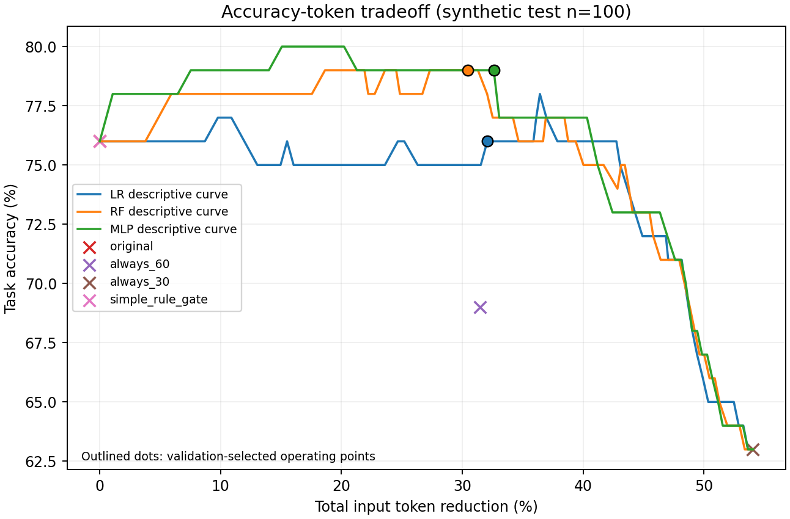
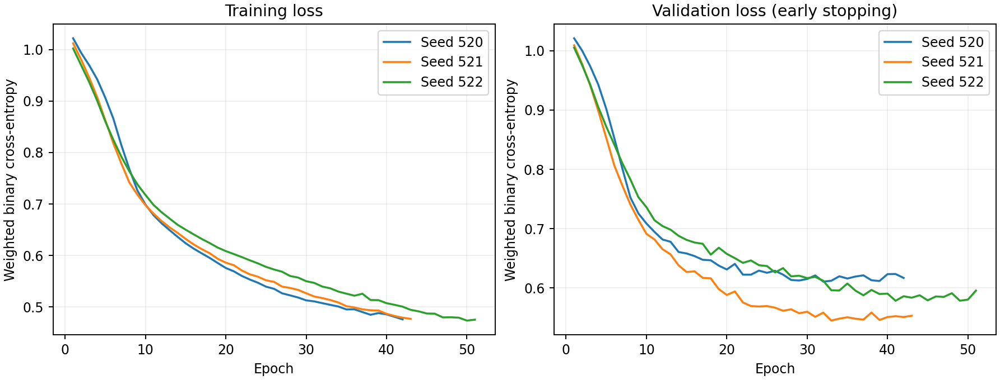
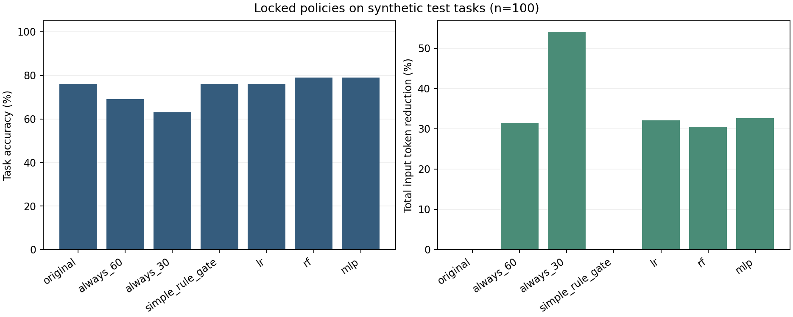
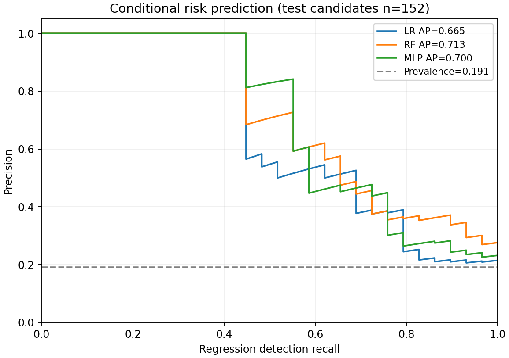

100个开发任务、500个正式任务和50个合成结构留出任务。真实本地Qwen回答生成标签，训练MLP、Logistic Regression和Random Forest，并用验证集锁定门控阈值。
| 策略 | 准确率 | 变化 | 输入token减少 | 新增错误数 |
|---|---|---|---|---|
| 原文 | 76.00% | +0.00pp | 0.00% | 0 |
| 固定保留60% | 69.00% | -7.00pp | 31.45% | 11 |
| 固定保留30% | 63.00% | -13.00pp | 54.06% | 18 |
| 简单规则门控 | 76.00% | +0.00pp | 0.00% | 0 |
| Logistic Regression 门控 | 76.00% | +0.00pp | 32.07% | 4 |
| Random Forest 门控 | 79.00% | +3.00pp | 30.44% | 2 |
| MLP 门控（预定主模型） | 79.00% | +3.00pp | 32.60% | 2 |
| 策略 | 准确率 | 变化 | 输入token减少 | 新增错误数 |
|---|---|---|---|---|
| 原文 | 86.00% | +0.00pp | 0.00% | 0 |
| 固定保留60% | 76.00% | -10.00pp | 30.26% | 8 |
| 固定保留30% | 68.00% | -18.00pp | 52.47% | 11 |
| 简单规则门控 | 80.00% | -6.00pp | 13.42% | 5 |
| Logistic Regression 门控 | 86.00% | +0.00pp | 0.00% | 0 |
| Random Forest 门控 | 86.00% | +0.00pp | 0.00% | 0 |
| MLP 门控（预定主模型） | 68.00% | -18.00pp | 48.09% | 11 |
沿用原模型和阈值；不是新增独立来源，也不是自然长文。
| 策略 | 准确率 | 变化 | 输入token减少 | 新增错误数 |
|---|---|---|---|---|
| 原文 | 72.00% | +0.00pp | 0.00% | 0 |
| 固定保留60% | 62.00% | -10.00pp | 37.61% | 6 |
| 固定保留30% | 56.00% | -16.00pp | 65.56% | 9 |
| 简单规则门控 | 74.00% | +2.00pp | 17.12% | 0 |
| Logistic Regression 门控 | 72.00% | +0.00pp | 0.00% | 0 |
| Random Forest 门控 | 72.00% | +0.00pp | 0.00% | 0 |
| MLP 门控（预定主模型） | 72.00% | +0.00pp | 0.00% | 0 |
预定主模型为seed 520的MLP。所有数据是受控合成事实记录；本次结果不能证明长文本、其他模型或真实业务场景的通用收益。输入token减少不代表费用或订阅额度减少。



